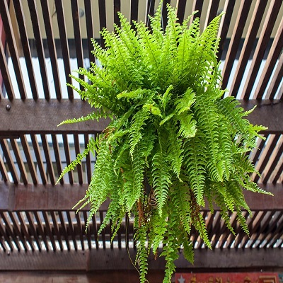
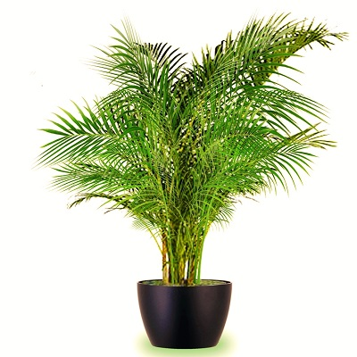
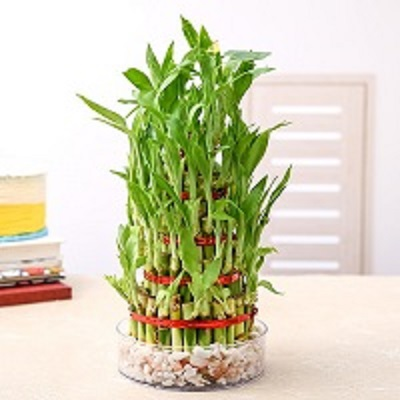
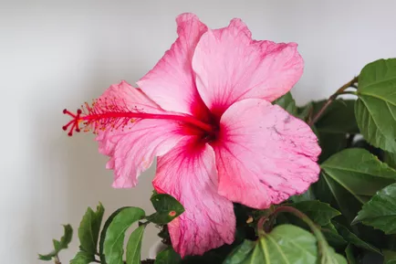
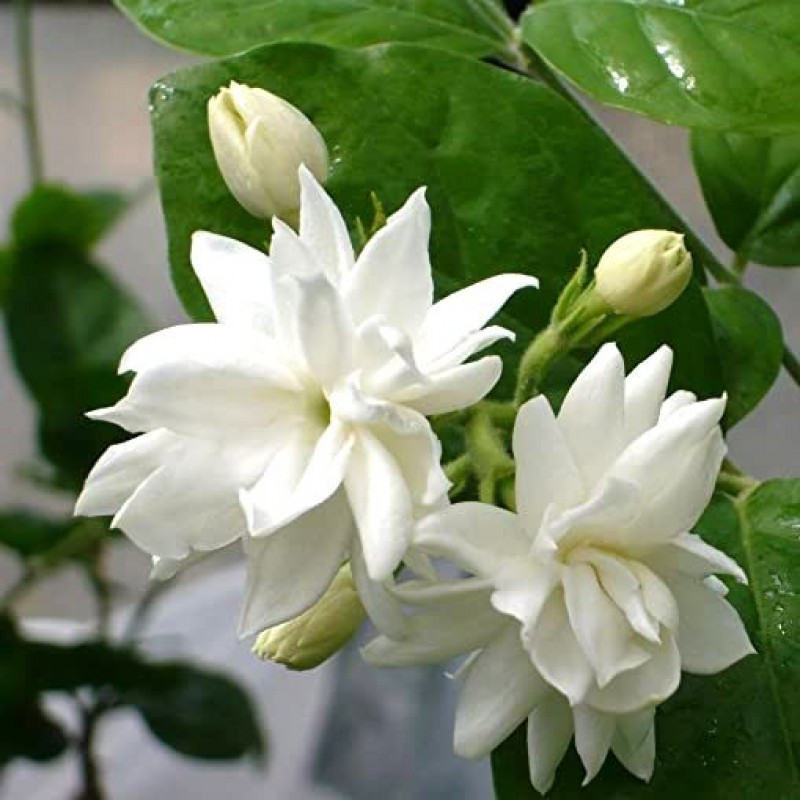
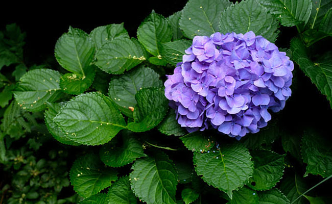

|  |  |  |
Boosten FernWith its mass of lush green foliage, the Boston Fern is thought to be one of the best air purifying houseplants. This evergreen plant not only helps to rid the home of harmful toxins it improves humidity by helping to restore moisture to the air naturally too. |
PalmThese plants are attractive and useful as showpieces because of their large, distinct leaves. Everyone in the house is said to benefit from these plants, as they bring wealth and peace of mind. |
Lucky BambooBamboo plant, according to Vastu Shastra and Feng Shui, is regarded as a lucky plant. Widely used as a houseplant, bamboo is considered to be auspicious for the house as it attracts good luck and wealth. |
|  |  |  |
HibiscusHibiscus preparations, including teas, powders, and extracts, have been shown to decrease blood pressure, reduce body fat, improve metabolic syndrome, protect the liver, and fight cancer cells. |
MograRelaxes and Relieves Stress. These flowers are famous for their enchanting fragrance.Neutralizes and Purifies Air. One of the major benefits is it helps with inducing good sleep. |
HydrangeaHydrangea root may protect from kidney damage and provide antioxidant and anti-inflammatory effects, among other benefits. |